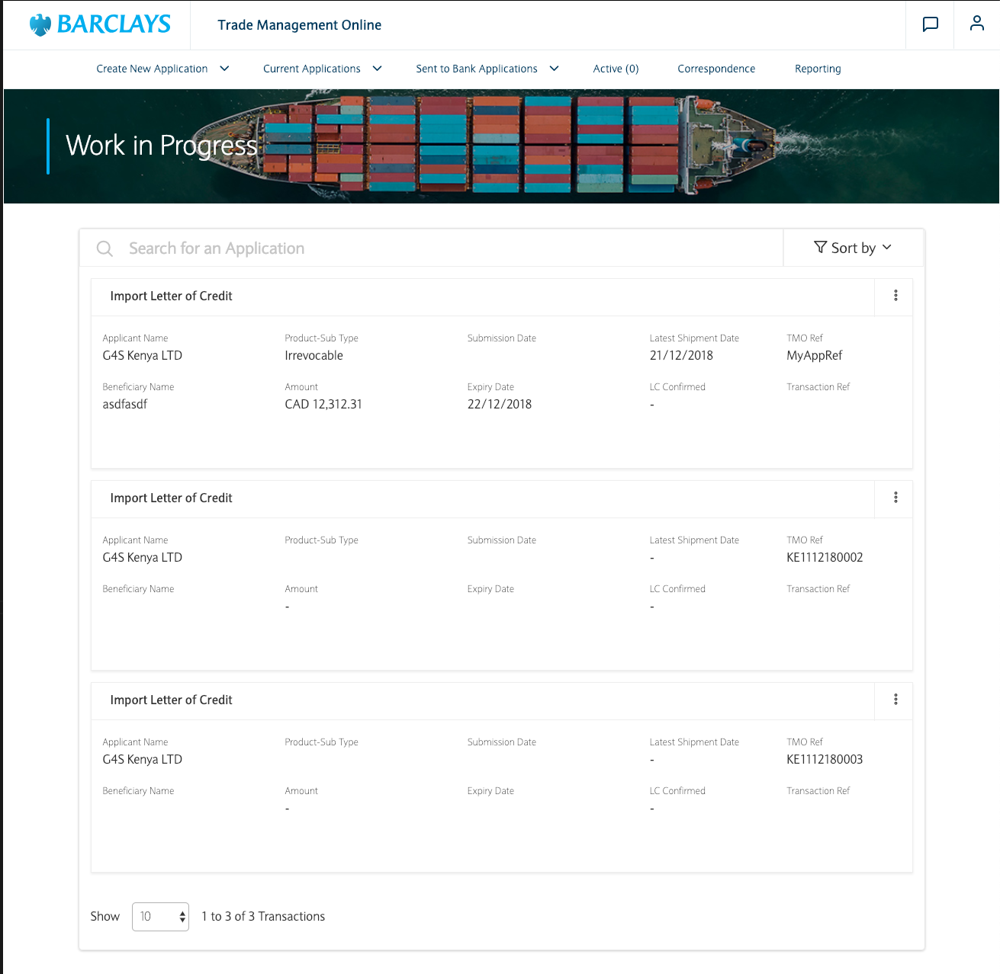

Typically used when importing/exporting goods (regardless of location, be it domestic or
cross-border) to provide security through contractual obligations around the procurement of the
goods.
A Letter of Credit (LC) is a written undertaking given by a bank on behalf of the buyer to pay the
seller an amount of money within a specified time, provided the seller presents documents which
comply with the terms laid down in the Letter of Credit.
A letter of credit is issued by the buyer’s bank typically via another bank, called the Advising
Bank. The Advising Bank will be asked to either advise the LC:
(a) Unconfirmed: Advising Bank merely informs the seller of the terms and conditions of the
LC
(b) Confirmed: Advising Bank adds its own commitment that payment will be made if the terms
of the LC are complied with
The applicant/beneficiary's benefits:
The seller may have insisted on a Letter of Credit as the method of payment. A guarantee from
Barclays is acceptable all over the world.
Our importing customer can specify when and under what conditions payment will be made, therefore
giving them some ability to dictate to their seller what shipping documents they need to produce
together with shipment date and the method of transportation.
By providing the seller with some certainty of payment our importing customer may have been able to
negotiate longer credit terms or an improved price for the goods.
Our importing customer will know with some degree of certainty when they will have to pay for the
goods, affording them some assurances regarding their cash flow.
The bank's benefits:
It generates income for the bank.
It creates cross-sell opportunities for the bank and their clients.
Giving our customers visibility and flexibility to their importing and exporting of goods.
Helps the applicant and beneficiary build a mutually respectful and secure business model between
the two, with the bank facilitating it, resulting in a better reputation among parties.
Letters of Credit
Say what!?
Typically used when importing/exporting goods (regardless of location, be it domestic or
cross-border) to provide security through contractual obligations around the procurement of the
goods.
A Letter of Credit (LC) is a written undertaking given by a bank on behalf of the buyer to pay the
seller an amount of money within a specified time, provided the seller presents documents which
comply with the terms laid down in the Letter of Credit.
A letter of credit is issued by the buyer’s bank typically via another bank, called the Advising
Bank. The Advising Bank will be asked to either advise the LC:
(a) Unconfirmed: Advising Bank merely informs the seller of the terms and conditions of the
LC
(b) Confirmed: Advising Bank adds its own commitment that payment will be made if the terms
of the LC are complied with
The applicant/beneficiary's benefits:
The seller may have insisted on a Letter of Credit as the method of payment. A guarantee from
Barclays is acceptable all over the world.
Our importing customer can specify when and under what conditions payment will be made, therefore
giving them some ability to dictate to their seller what shipping documents they need to produce
together with shipment date and the method of transportation.
By providing the seller with some certainty of payment our importing customer may have been able to
negotiate longer credit terms or an improved price for the goods.
Our importing customer will know with some degree of certainty when they will have to pay for the
goods, affording them some assurances regarding their cash flow.
The bank's benefits:
It generates income for the bank.
It creates cross-sell opportunities for the bank and their clients.
Giving our customers visibility and flexibility to their importing and exporting of goods.
Helps the applicant and beneficiary build a mutually respectful and secure business model between
the two, with the bank facilitating it, resulting in a better reputation among parties.
Trade Loans
Say what!?
An alternative form of short-term borrowing without attracting commitment fees ($ave dat money)
The applicant/beneficiary's benefits:
Finances domestic as well as international trade transactions for up to 100% of the invoice value.
Can be used to pay import collections and import letters of credit at sight while extending your
working capital.
Improves relationships with sellers.
Providing you with the flexibility to respond quicker to new opportunities in the market.
The bank's benefits:
It generates income for the bank.
Quick processing of applications result in happier clients with fast turnaround times on financing.
Helps the applicant and beneficiary build a mutually respectful and secure business model between
the two, with the bank facilitating it, resulting in a better reputation among parties.

TMO
Trade Management Online - Client facing portal.
Replaces manual forms that client submits for respective trade products.
It provides convenience to the client, where the client can submit applications in their own comfort.
It provides trade MI and transaction tracing for the client.
It provides messaging functionality between the client and the bank.
It provides the authorization functionality, where multiple authorization levels are enabled.
It improves data accuracy as the capturing is done by the client themselves, as opposed to bank users
capturing on behalf of the client.
TMW
Trade Management Workflow - Colleague Facing.
Replaces manual processing and application checks, as well as movign from a paper based flow to the
digital space.
It provides trade MI and transaction tracing for the bank.
It provides a standardised workflow for the bank, on trade products.
It reduces operational costs where clients would be called or emailed regarding bank initiated queries,
status updates, etc.
It eliminates the risk of documents being lost.
It eliminates the risk of key-man dependency for the processing of transactions.
It provides follow-up functionality where users can create follow ups, add follow up notes and attach
documents in the resolution of such follow ups.
TMO & TMW
Trade Management Workflow & Online as a whole...
A single solution to all trade finance applications and products.
The ONLY in-house built pan-african solution to trade finance solutions.
ABSA Africa Group Ltd. - Ahead of their competitors in the African scene, through the ability to provide
their clients access to these systems, as well as allowing their clients to configure and structure their
applications and security of the system to tailor to their needs.
Our Team
The Rock Stars that made this project possible
Attie Ntenteni
David Orpen
Johan Jooste
Luke Lasich
Shilton Naiker
Tristan Goring
Velice Naumoski
Zander Kruger
Project History
What was Pangea?
4
Years of Planning + Dev
3 Failed Dev-houses
Revenue: R 0.00
3 Offical Rewrites
Spent: R200M
Nothing...
Tristan joined, immediately started asking for a re-write of the project. The
ITQ team was disposed of. Project was in the red.
BISON core team came to help the team.
Argued for a re-write and new team.
Johan joined the team and the re-write started.
Demo's on the new platform started. Started using Agile methodologies.
Got funding to continue the project thanks to speed of delivery. Velice
joined the team.
Attie joined the team. Completed our first end to end transaction. We had
started integraton with
our Cape Town team Threshold.
Shilton joined the team, started working on utilities for the project and
delivered tactical solutions that saved go live.
"Pilot" go live. The first time the project actually was on a production
server. First project in Absa live on Absa Access portals (Threshold). We got some leave from all the
overtime.
Darren and Luke joined the team. We got the September go live date and chaos
ensued.
Delivered all the strategic features of the application. And the team was large
enough to make multiple squads.
More products were started on top of the existing framework.
Completed more products and features with loads of overtime again.
Go-live in Kenya and Mauritius. Import Letters of Credit and Trade Loans
end-to-end products released. Project went to amber.
Pre-prod environments for Kenya, Mauritius, Ghana, Uganda, South Africa,
Seychelles, Tanzania, Zambia, Mozambique and Botswana.
Export Letters of Credit released in Kenya and Mauritius. Started work for
Reporting and MI features. Project went to green.
Started training users in Uganda and Ghana.
ABSA went from this
To this
System Overview
Front Ends
Two projects(TMO and TMW) each serving its own purpose
These projects are built using the Angular (Version 4) MVVC Framework
Solar based on Bootstrap library
Uses NPM to manage its dependencies
Karma and Jasmine ( Unit testing frameworks) used to execute unit tests
Finally, Webpack is used to bundle the entire application into a single executable package
Backend
Sole purpose is to provide Restful API to service the front ends
Spring Boot Application using Maven as its dependency management system


 Kibana and
Logstash
Kibana and
Logstash